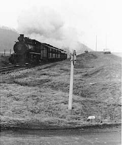

There is an active group called "Friends of the East Broad Top" that publish the 'Timber Transfer', with the latest news, historical info and schedules for the EBT. Membership is open to all at $25.00 US per year. If you are interested, contact:
Pete Clarke
10428 Carlyn Ridge Rd.
Damascus, MD 20872
email: febt@aol.com

 These are some notes on the photos from Bill:
These are some notes on the photos from Bill:
 "I took the photos in this series during one of the Winter
Spectaculars in the late 60's (I think). I do not know, at this time
how many of the pictures are worth scanning, but I will be working at
it for a while.
"I took the photos in this series during one of the Winter
Spectaculars in the late 60's (I think). I do not know, at this time
how many of the pictures are worth scanning, but I will be working at
it for a while.
They are all B&W. They were shot using an EXA 35mm camera with a 35mm wide angle lens on Kodak Tri-X (ASA400). The weather that weekend was lousy."
"There are two other Sites that I am aware of with EBT photos:"
http://www.dementia.org/~adams/ebt/photo.html
http://www.spikesys.com/ebt.html
 "Over the years, I have taken many photographs of trains and rail
related subjects. Although this is fine for me, without a way to share
the work, it all seemed kind of pointless. In recent years, I would
visit rail sites without taking a camera. Then along comes the
Internet. Now, I CAN share with others."
"Over the years, I have taken many photographs of trains and rail
related subjects. Although this is fine for me, without a way to share
the work, it all seemed kind of pointless. In recent years, I would
visit rail sites without taking a camera. Then along comes the
Internet. Now, I CAN share with others."
Bill Waller
Bethel Park, PA, USA
Thanks Bill.
Jeff Scherb sent me a link to his awsome TM magazine database, hosted at Accurail. For a listing of drawings in many of the major magazines, use this link:

©1999 blanchard design,
all rights reserved
Photos ©1999 Bill Waller, all rights reserved